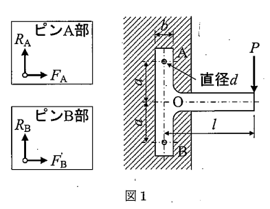

問題概要
2020年度の材料力学入試では、大問【1】でT型板のピン支持構造問題（静力学的平衡とせん断応力）、大問【2】で片持ちはりの曲げ問題（分布荷重と集中荷重の組合せ）が出題されました。この年度から大問数が3問から2問に変更され、各問題の深度が増加しました。
問題PDFをダウンロード (2020年度) 解答PDFをダウンロード (2020年度)大問【1】
T型板が壁面に2つのピンA、Bで固定され、先端に集中荷重Pが作用する構造について、静力学的平衡、支持力、せん断応力、回転角の解析を行う。
与えられた条件:
- T型板：縦板（長さl、厚さt）、横板（高さ2h、幅b、厚さt）
- ピン：直径d、2つのピンA、Bで壁面に固定
- 荷重：先端に集中荷重P（垂直下向き）
- 材料：ヤング率E

図1：問題1の説明図
考え方のヒント
T型板が静的平衡にあるため、力とモーメントの釣り合い条件を適用する。水平・垂直の力の釣り合いと、回転中心まわりのモーメントの釣り合いから反力を求めます。
途中式と解答
(1) つり合い式の導出
T型板の静的平衡条件から、以下のつり合い式が成り立ちます。
力の釣り合い：
垂直方向：$$R_A + R_B - P = 0$$
水平方向：$$F_B - F_A = 0$$
モーメントの釣り合い（点Oまわり）：
$$h F_A + h F_B - P l = 0$$
ここで、\(R_A, R_B\)は鉛直反力、\(F_A, F_B\)は水平反力です。
(2) 支持力の計算
つり合い式を解いて反力を求めます。
水平反力：
水平力の釣り合いから \(F_A = F_B\)。これをモーメント式に代入：
$$2h F_A = P l \implies F_A = F_B = \frac{P l}{2h}$$
鉛直反力：
構造の対称性により：$$R_A = R_B = \frac{P}{2}$$
(3) ピンのせん断応力
各ピンにかかる合力とせん断応力を計算します。
ピンにかかる合力：
$$S_A = S_B = \sqrt{R_A^2 + F_A^2} = \sqrt{\left(\frac{P}{2}\right)^2 + \left(\frac{P l}{2h}\right)^2}$$
$$= \frac{P}{2}\sqrt{1 + \left(\frac{l}{h}\right)^2}$$
せん断応力：
ピン断面積 \(A_{pin} = \frac{\pi d^2}{4}\) を用いて：
$$\tau_A = \tau_B = \frac{S_A}{A_{pin}} = \frac{2P}{\pi d^2}\sqrt{1 + \left(\frac{l}{h}\right)^2}$$
(4) 点Oの回転角
横板を単純支持梁として解析し、中央での回転角を求めます。
答え: 上記の各計算結果による
中央にモーメント \(M_0 = Pl\) が作用する場合：
$$\theta = \frac{M_0 (2h)}{16 E I_v} = \frac{Plh}{8EI_v}$$
横板の断面二次モーメント：\(I_v = \frac{bt^3}{12}\)
$$\theta = \frac{3Plh}{2Ebt^3}$$
全体のポイント
- T型板の静的平衡解析では、力とモーメントの釣り合いを適用する。
- ピンのせん断応力は合力と断面積から求める。
- 片持ちはりでは固定端で反力とモーメントが発生する。
受験材料力学のチップス
- 静的平衡問題では対称性を活用して計算を簡略化する。
- 集中荷重と分布荷重の組み合わせでは区間ごとに解析する。
- 単位と符号の確認を欠かさず行う。